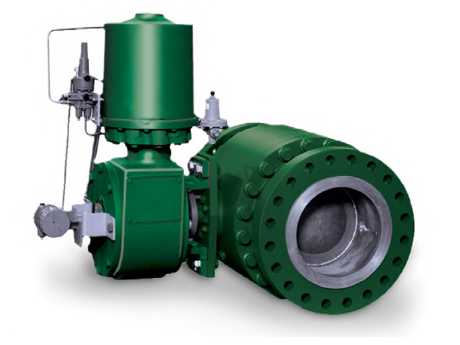
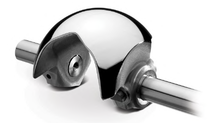

Full-Port Ball vs. Segmented Ball
Full-Port/Through-Bore Ball — Capacity & Pigging

Almost no restriction to flow, permits pigging, suits high-ΔP throttling to NPS 24 — but needs 15–20° of rotation before it starts controlling, a real lag penalty against a precision-throttling duty
Segmented Ball — Throttling Control

Reduced bore with a contoured notch edge trades capacity for markedly better throttling control and higher rangeability; splined-shaft connections eliminate lost motion — specify wherever control performance, not raw capacity, decides
After Control Valve Handbook, 6th ed., Figs. 3.14 & 3.8 — used directly, reused from ch3-m1 slide 26, reframed around the selection decision. Component Index: cvh-cmp-full-port-ball-control-valve, cvh-cmp-segmented-v-notch-ball.